El ecónomo del arzobispado de Valladolid , Enrique Peralta , admitió ayer que ocultó información a la Comisión Nacional del Mercado de Valores ( CNMV ) cuando se le requirió a finales de marzo de 1999 que precisase las inversiones de esa diócesis en Gescartera.
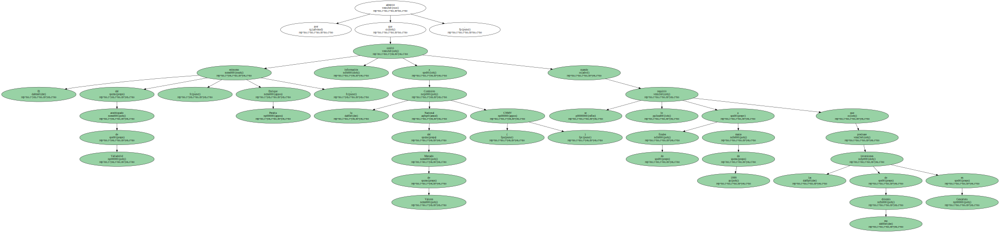Peralta se negó a aclarar si el fondo ascendía a 30 o a 1.050 millones de pesetas , puesto que había dos documentos que recogían cifras distintas , lo que llevó al entonces director de supervisión de la CNMV a afirmar que el arzobispado colaboraba con el intento de engaño de Gescartera.
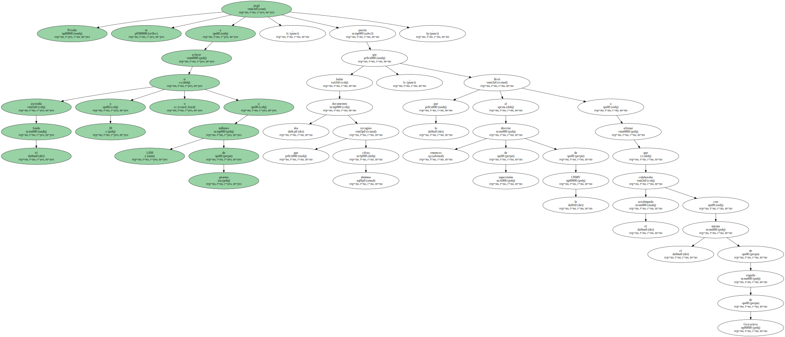Preguntado sobre este asunto en la comisión parlamentaria que investiga el escándalo financiero , Peralta afirmó que no quiso responder al requerimiento de Vives porque ya había explicado el estado de sus cuentas " el día anterior ".
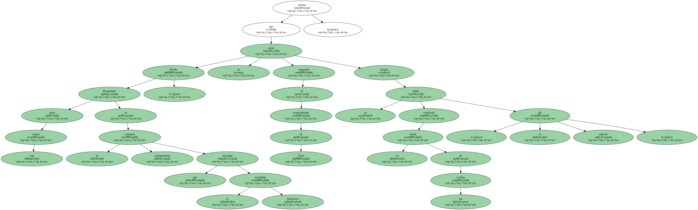Y dijo que remitió al director de supervisión de la CNMV a Gescartera por si necesitaba más información.
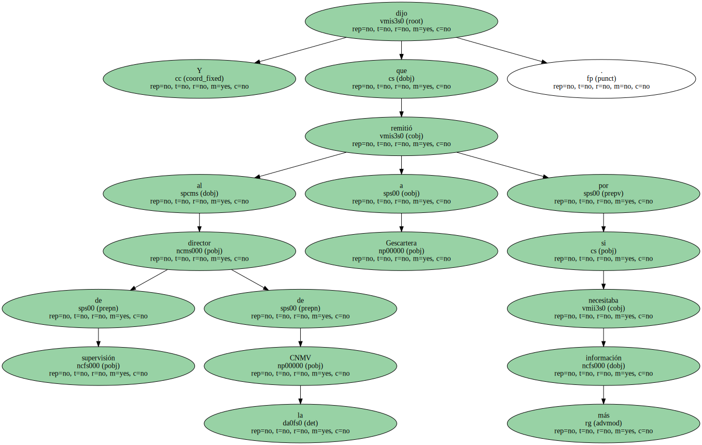EXPLICACIONES.
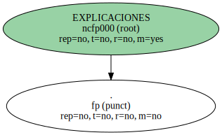El ecónomo rechazó que hubiera contradicciones en las cuentas del arzobispado , como destacó Vives en su informe de 1999 sobre la delicada situación de Gescartera.
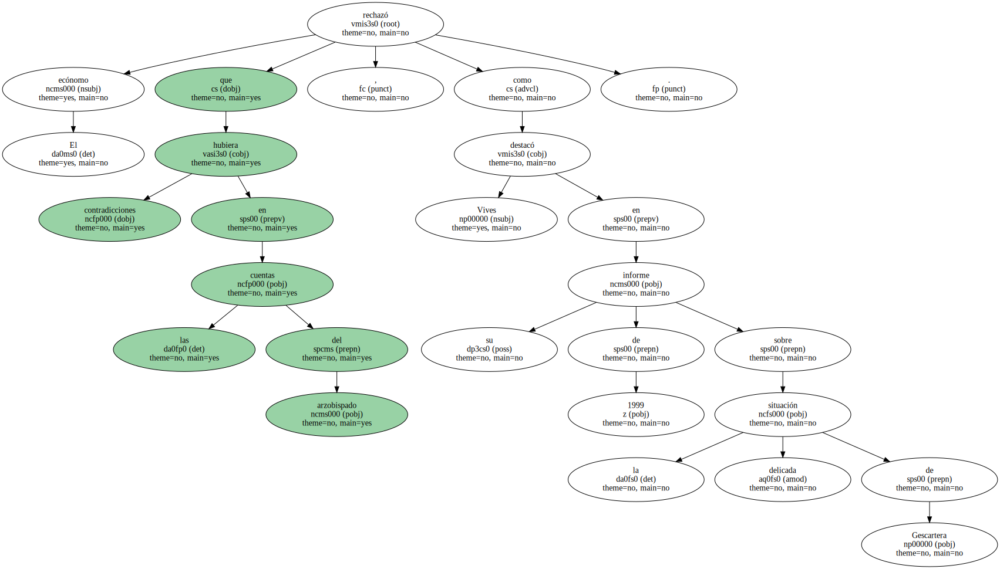Según Peralta , una de las cifras que proporcionó a la CNMV ( los 30 millones ) reflejaba la parte líquida de la inversión , mientras que la otra se refería a los depósitos en valores.
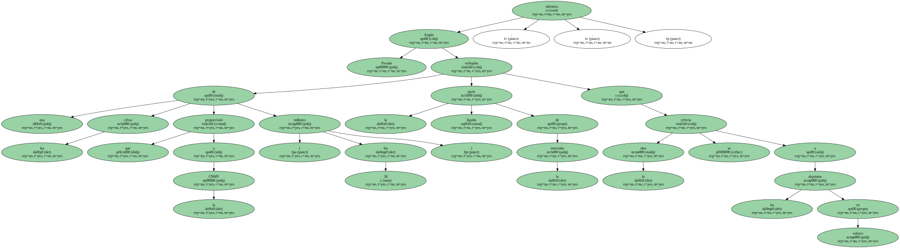Jordi Jane , de CiU , le preguntó por qué , si la situación era así de simple , rehusó aclararla a Vives.
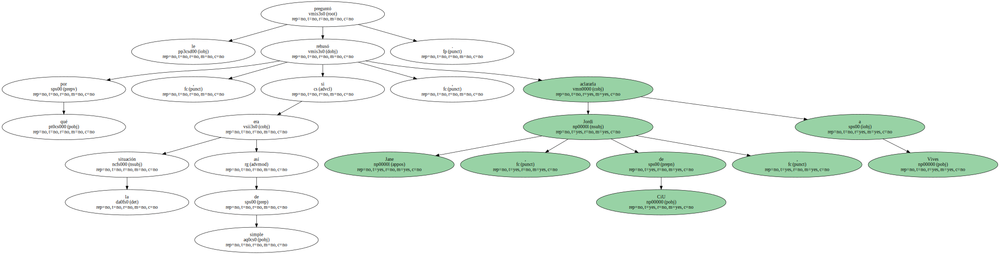El ecónomo se mantuvo en sus trece y dijo que ya se había explicado por escrito el día previo.

El portavoz de IU , Felipe Alcaraz , le recordó que en ambos documentos figuraba la palabra " saldo " acompañando las sumas.
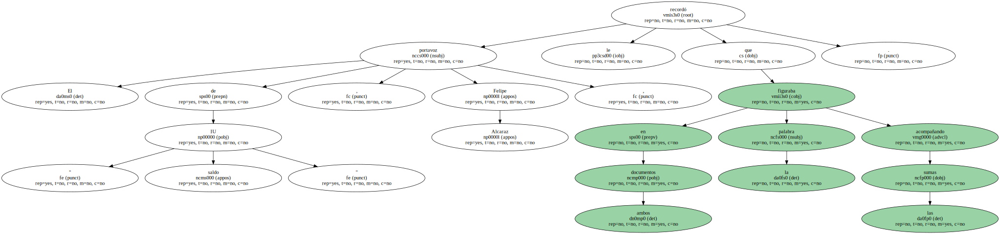Peralta se encogió de hombros y reiteró su versión.
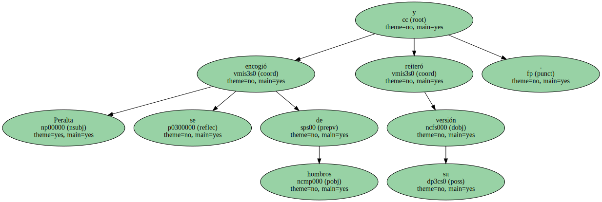El testimonio del ecónomo chocó en varios puntos con la versión que ofreció la semana pasada Javier Valenzuela , ex delegado de Gescartera en Valladolid y ex director de Economía en la Junta de Castilla y León cuando la presidía José María Aznar.
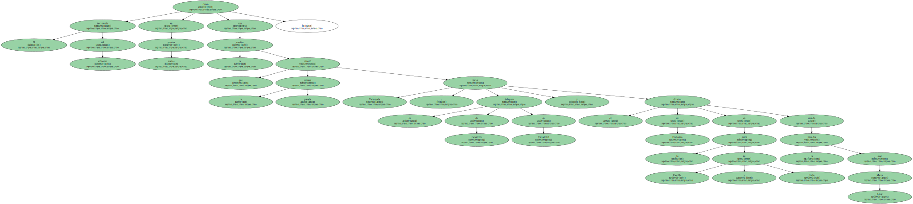Valenzuela , que fue quien captó como cliente al arzobispado , dijo en su comparecencia que él aconsejó en marzo de 1999 a Peralta que retirase su inversión de Gescartera dado que había dimitido como delegado.
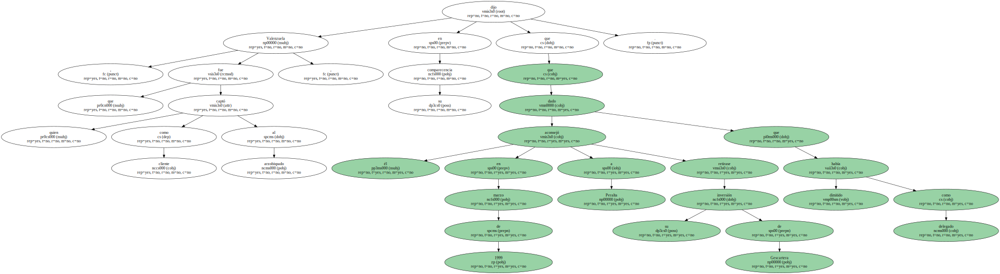El ecónomo dijo que nadie le recomendó retirar el dinero , y que lo hizo él por iniciativa propia al saber que la entidad estaba sometida a inspecciones.
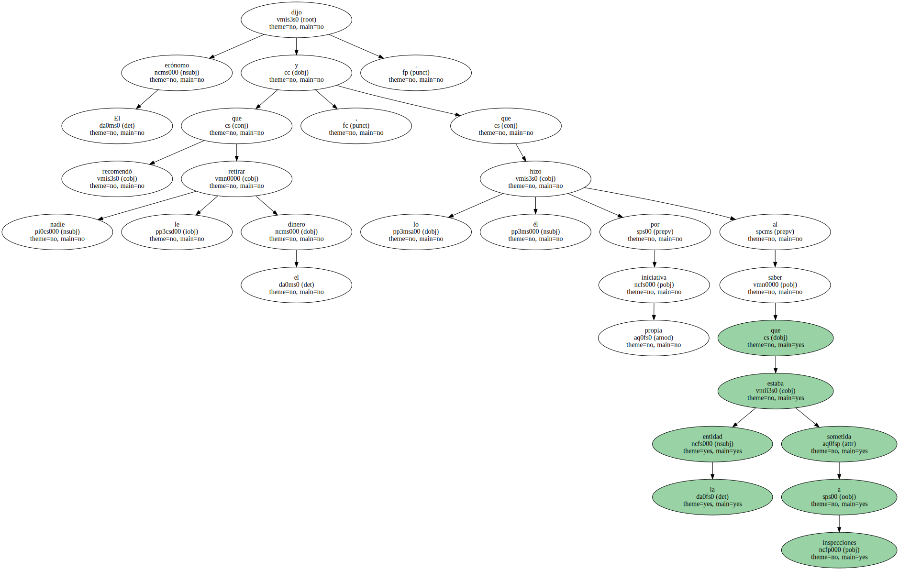También dijo que la inversión era a renta fija , mientras que Valenzuela explicó que era de renta variable.
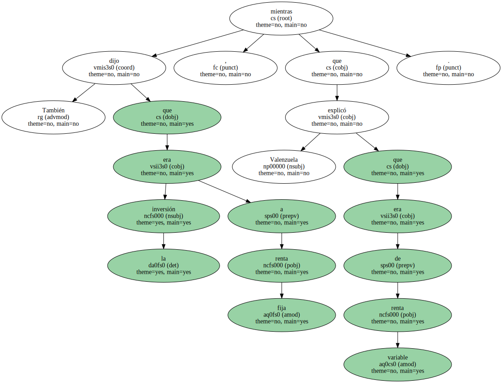RECUPERACIÓN.
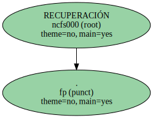Peralta se preció de recuperar a tiempo el dinero invertido por el arzobispado.
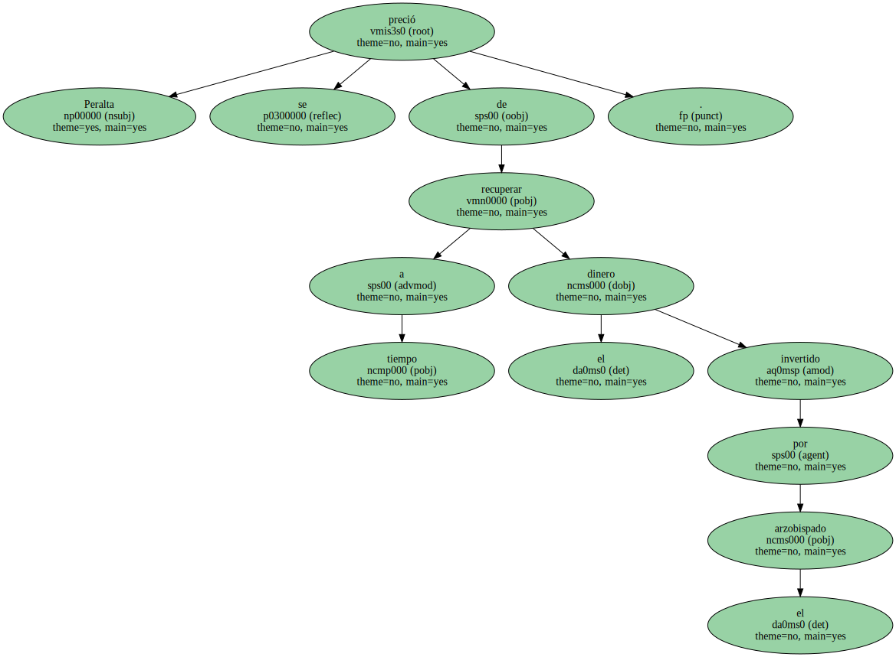Alcaraz le recordó que ese dinero provenía de otro cliente , la Mutua de la Policía.
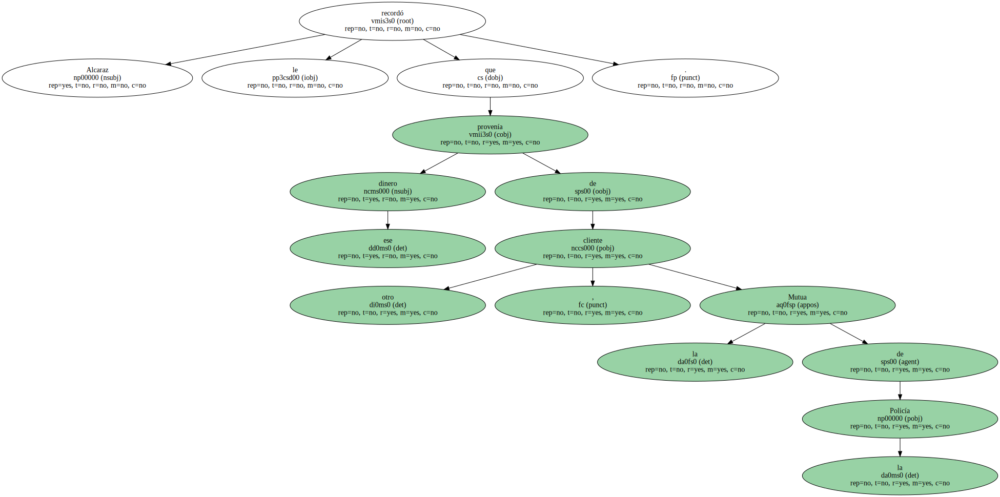" Yo no lo sé , lo dicen los periódicos , no es una cosa veraz " , replicó.
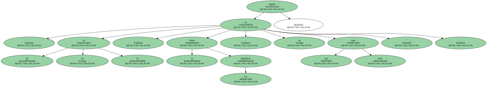El portavoz de IU le preguntó si , en caso de demostrarse esa procedencia , " compartiría " el dinero con los damnificados.
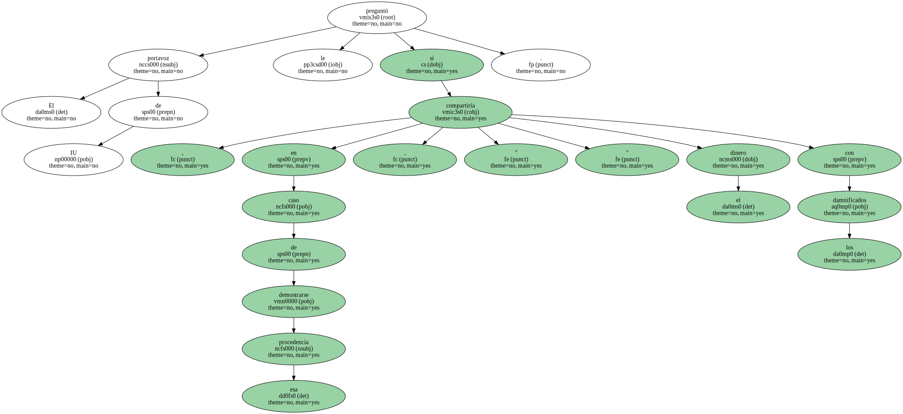" No , no es dinero mío , está destinado a un fin preciso ".
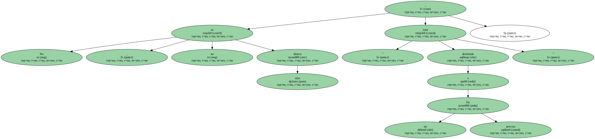